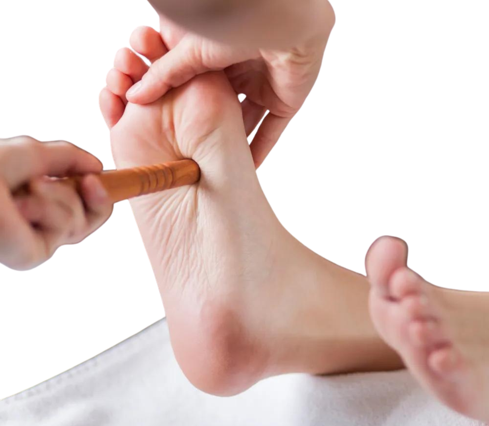

Can Reflexology Improve Digestion? Natural Gut Health Benefits

Digestive issues such as bloating, constipation, acid reflux, and indigestion are common problems that affect many people. While conventional treatments and dietary changes help manage digestive health, alternative therapies like reflexology offer a natural and holistic approach to improving digestion. Reflexology is based on the principle that specific pressure points on the feet, hands, and ears correspond to different organs, including the digestive system. But can reflexology truly improve digestion? Let’s explore its benefits and effectiveness in promoting gut health.
Understanding Reflexology
Reflexology is an ancient practice that involves applying pressure to certain reflex points on the body to stimulate healing and balance. These points are believed to correspond to different organs, including the stomach, intestines, liver, and pancreas. By manipulating these reflex zones, reflexologists aim to improve circulation, reduce stress, and support digestive function.
How Reflexology Affects Digestion
Reflexology helps with digestion in several ways by promoting relaxation, improving blood circulation, and stimulating nerve pathways connected to the digestive organs. Here are some key benefits:
1. Enhances Digestive Function
By stimulating reflex points linked to the stomach and intestines, reflexology can help regulate digestive processes, including nutrient absorption and waste elimination.
2. Reduces Bloating and Gas
Bloating and gas are often caused by poor digestion and sluggish intestinal movement. Reflexology helps stimulate bowel activity, promoting the efficient breakdown of food and reducing bloating.
3. Relieves Constipation
Constipation is a common digestive issue that can be alleviated by applying pressure to reflex points associated with the colon and intestines. This stimulation encourages peristalsis, the natural contraction of muscles that moves waste through the digestive tract.
4. Supports Liver and Gallbladder Function
The liver and gallbladder play a crucial role in digestion by producing bile, which helps break down fats. Reflexology techniques targeting these organs may enhance their function, improving fat digestion and overall gut health.
5. Balances Stomach Acid Levels
Acid reflux and heartburn occur when stomach acid levels become imbalanced. Reflexology can help regulate acid production by stimulating reflex points related to the stomach and esophagus.
6. Reduces Stress and Anxiety
Stress is a major contributor to digestive problems such as irritable bowel syndrome (IBS) and acid reflux. Reflexology promotes relaxation, lowers cortisol levels, and helps reduce the impact of stress on digestion.
7. Encourages Detoxification
Reflexology stimulates the lymphatic system, helping the body eliminate toxins that can disrupt digestion and overall health.
Key Reflexology Points for Digestion
Each area of the foot and hand corresponds to specific digestive organs. Here are some key reflex points that benefit digestion:
- Solar Plexus Reflex (Center of the Foot): Helps relieve stress, which is a major cause of digestive disorders.
- Stomach Reflex (Ball of the Foot): Stimulates the stomach and supports digestion.
- Intestinal Reflex (Lower Arch of the Foot): Encourages proper bowel movement and relieves constipation.
- Liver and Gallbladder Reflex (Outer Right Foot): Supports liver function and bile production.
- Pancreas Reflex (Inner Arch of the Foot): Helps regulate digestive enzymes and blood sugar levels.
Reflexology Techniques for Better Digestion
Reflexology sessions can be done by a trained professional, but you can also practice simple techniques at home to support your digestive system:
1. Thumb Walking
Using your thumb, apply gentle pressure in a walking motion along the arch of your foot, focusing on digestive reflex points.
2. Circular Massage
Apply circular pressure on the ball and arch of the foot to stimulate the stomach and intestines.
3. Deep Pressing on Key Points
Use steady, deep pressure on the liver, pancreas, and stomach reflex points for a few seconds before releasing.
4. Kneading the Foot Arch
Gently knead the arch of your foot with your fingers to activate intestinal reflex points.
5. Applying Heat Before Reflexology
Soak your feet in warm water before practicing reflexology to relax muscles and enhance circulation.
Reflexology for Specific Digestive Issues
Acid Reflux and Heartburn
Focusing on the stomach and esophagus reflex points can help regulate acid production and prevent acid reflux symptoms.
Irritable Bowel Syndrome (IBS)
Reflexology can alleviate IBS symptoms by reducing stress and improving bowel motility through stimulation of the intestinal reflex zones.
Constipation
Targeting the colon reflex point encourages peristalsis and helps relieve constipation naturally.
Indigestion
Massaging the stomach reflex zone can help break down food more efficiently and prevent indigestion.
Precautions and Considerations
While reflexology is generally safe, it’s essential to take some precautions:
- Consult with a healthcare professional before starting reflexology, especially if you have severe digestive conditions.
- Work with a certified reflexologist for the best results.
- Avoid excessive pressure if you experience pain or discomfort.
- Stay hydrated after a session to support detoxification.
Combining Reflexology with Other Digestive Health Strategies
For optimal digestive health, reflexology can be combined with other natural remedies, such as:
- Healthy Diet: Eating fiber-rich foods, probiotics, and plenty of water supports digestion.
- Regular Exercise: Physical activity promotes bowel regularity and reduces bloating.
- Mindfulness and Meditation: Reducing stress levels enhances gut health.
- Hydration: Drinking enough water aids digestion and detoxification.
- Herbal Remedies: Herbal teas like peppermint, ginger, and chamomile can support digestive function.
Conclusion
Reflexology is a natural and effective way to support digestive health by improving circulation, reducing stress, and stimulating reflex points associated with the stomach, intestines, and other digestive organs. While it may not replace medical treatments, it can be a valuable complementary therapy for those experiencing digestive issues.